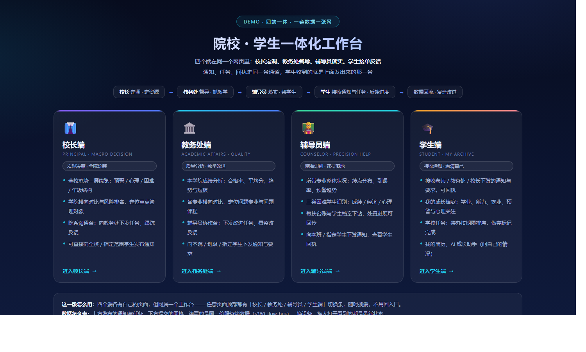
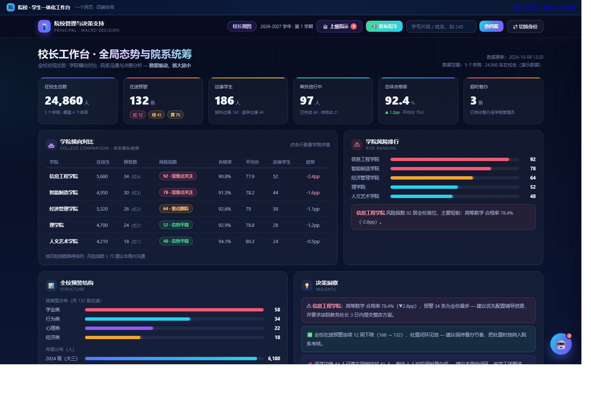
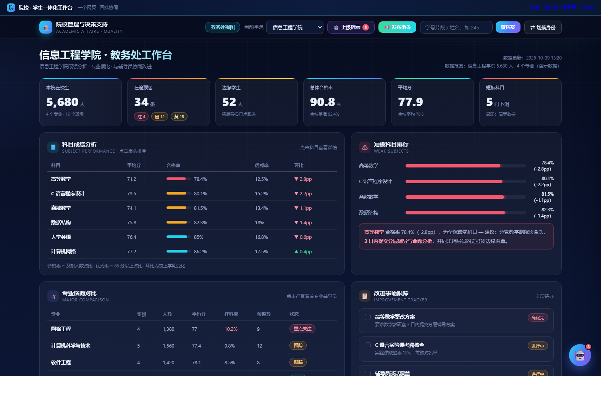
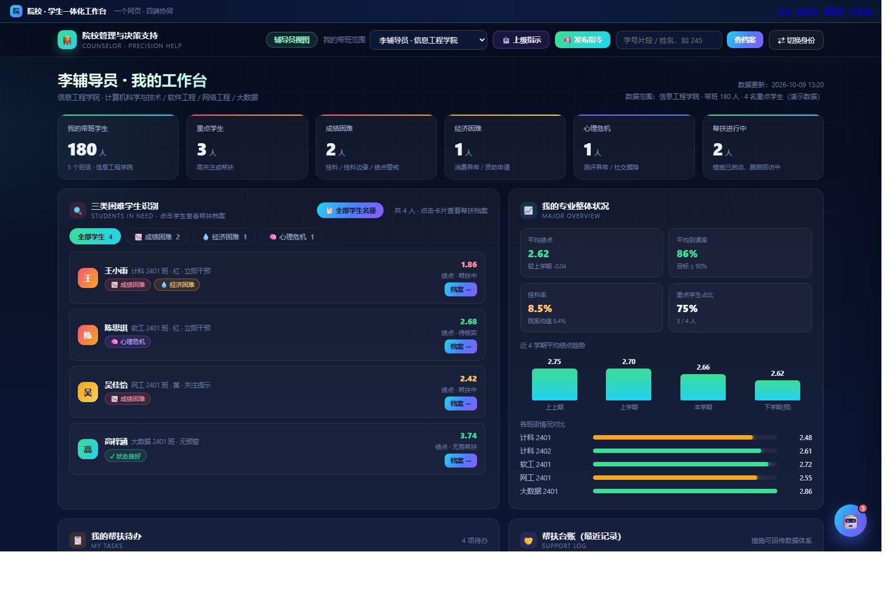
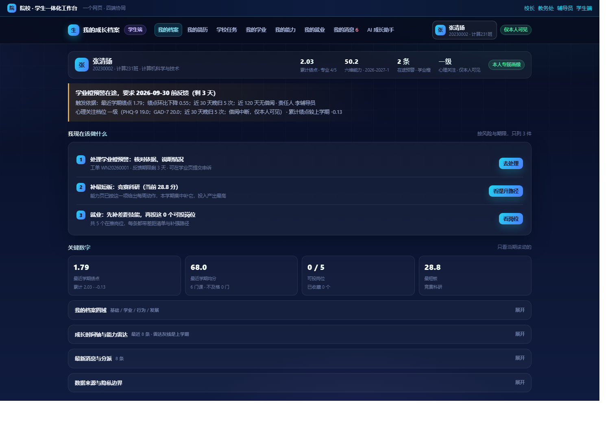
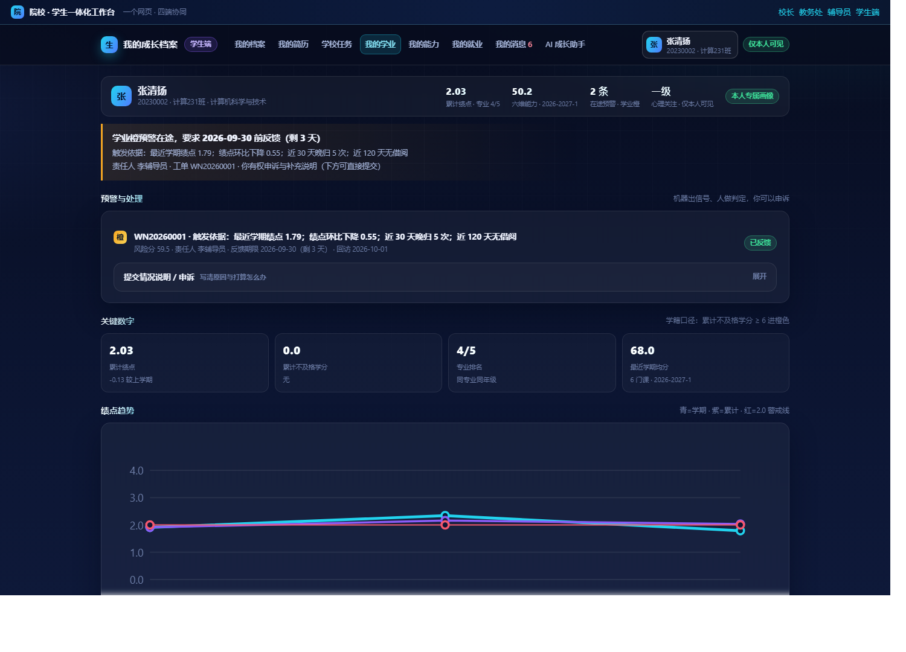
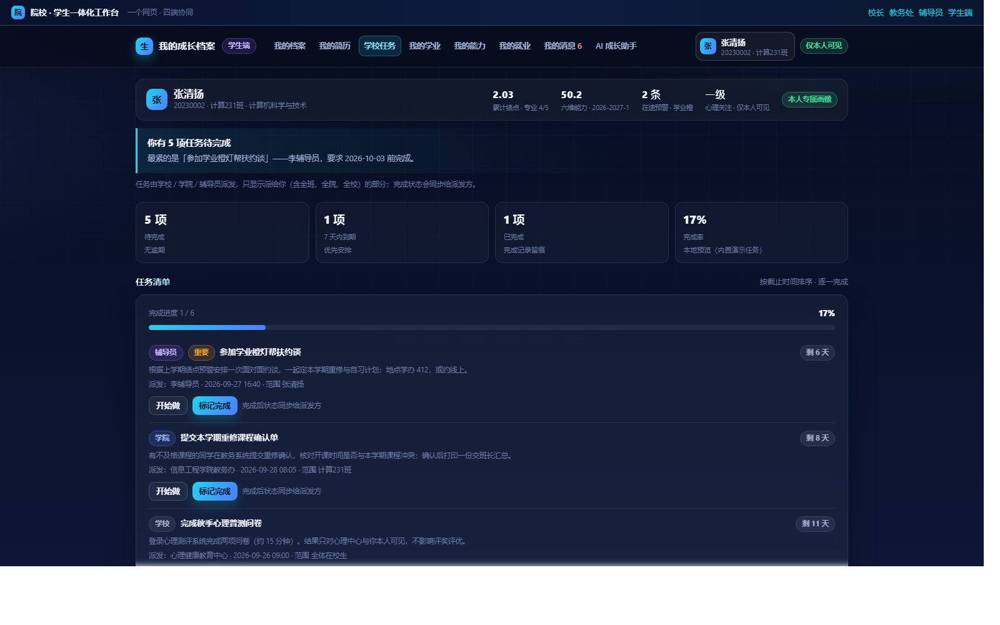
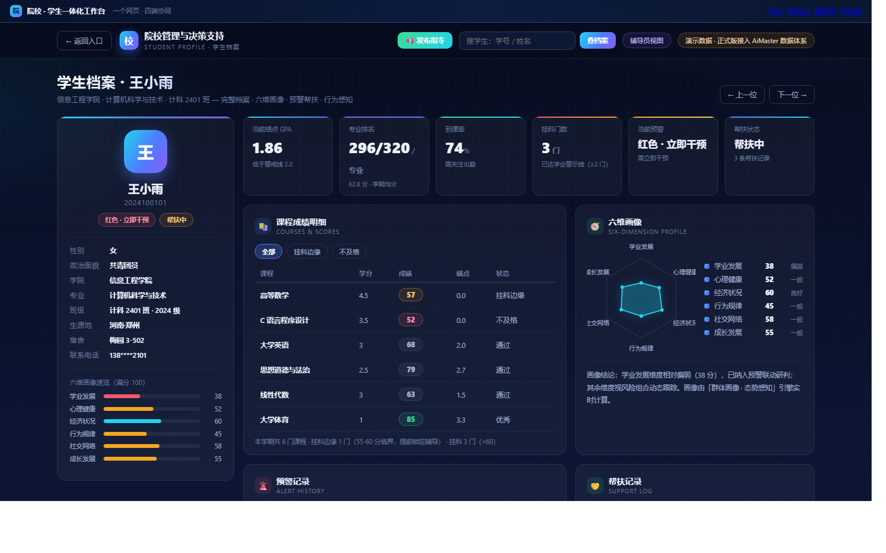

NJUST 学生全景档案 AI Agent 面向学生本人，NJUST 院校管理决策系统 面向管理者； 两者共用同一套数据底座与任务通道，学生在手机上看得到的东西，正是辅导员和教务处点一下之后落下去的结果。
面向学生本人的一人一档成长档案。只看得到自己的数据，换别人的学号会被整页拦截。
面向校长、教务处、辅导员三级的决策支持系统，一屏看风险、一键把任务派下去。
从看数据到派任务再到回传结果，一条链走完，谁也不用再等一份报表。
六格关键数字一屏看完，往下能钻到学院，发现短板直接把议题派给该院负责人，派完在行末看状态点。
各科合格率与环比一目了然，问题科目排行在前；选一门课就能下发整改任务，自动带出对应辅导员。
自己带的困难学生名单、最近一次帮扶时间、累计次数、下次跟进时间都摆在台账上，回传与周报各点一下。
绩点、预警、能力、岗位一处看全；老师的通知和任务直接收到，点「确认完成」对方页面就更新。
不是一堆静态报表，而是一套能算、能判、能派活、能留痕的学生工作系统。
| 能力 | 说明 |
|---|---|
| 学业分级 | 按绩点、挂科、环比变化自动分档，给出预警等级 |
| 心理信号 | 从行为记录里识别需要关注的学生（仅本人与授权角色可见） |
| 困难生指数 | 多维度加权算出困难程度，给资助与帮扶排序 |
| 岗位匹配 | 按能力画像匹配岗位并打分，给学生可投的清单 |
| 工单时限 | 任务带期限，逾期自动标红，催办有依据 |
| AI 智能体 | 学业助手与就业助手，基于本人数据回答「我现在该做什么」 |
| 数据落库 | 确认、申诉、回传、派发都真写库，换人打开也能看到 |
学生全景档案院校管理决策一人一档 学业预警六维能力画像帮扶台账 任务下发与反馈闭环AI Agent数据可视化
下面是 NJUST 院校管理决策系统 与 NJUST 学生全景档案 AI Agent 的实际界面（演示数据）。







